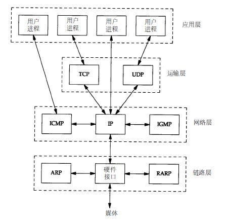
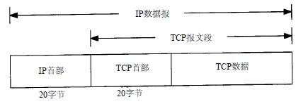
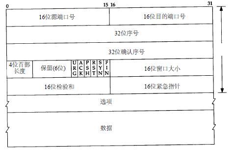

一、介绍
Tcp是工作在运输层的一种面向连接、可靠的字节流服务，面向连接意味着Tcp在传输数据前需要建立连接，可靠表示Tcp的数据传输时可靠的。

二、Tcp提供的可靠性保障
- 报文分段：应用数据被分割为最适合发送的数据块进行发送;
- 报文重传：报文发出后等待接收确认报文，若超时未收到确认报文会进行报文重传;
- 确认报文：Tcp收到对端报文后，会发送确认报文;
- 数据校验：Tcp报文内部有首部和数据的校验和，可以校验报文是否发生变化;
- 报文重组：接收到的报文可能是失序的，Tcp会进行报文重新排序，将正确数据交给应用层;
- 报文去重：Tcp的报文可能会分片发送，因此接收端可能会收到重复的报文片段，Tcp会丢弃重复的数据;
- 流量控制：每个设备都有自己的缓冲区，Tcp可以控制对端设备数据的发送速率，防止缓冲区溢出;
三、Tcp首部
Tcp是工作在网络层之上的，因此在Tcp报文前会封装一层IP首部，然后才是Tcp的首部，通常是20字节。

Tcp首部的数据格式如下：

序号：连接建立后主机会选择一个初始序号ISN，之后发送报文时会将该序号+1；
确认序号：Tcp主机收到数据后需要发送确认确认报文，确认序号为收到的报文中序号+1，确认序号只在ACK标志位为1时有效；
首部长度：首部长度只有4位，其表示的含义是32bit的个数，因此Tcp首部的最大长度为24*4byte=64byte，其中通常为20byte，其余字节为可选字段；
另外在Tcp的首部有6个标志比特位，其含义如下：
- URG：紧急指针有效；
- ACK：确认序号有效；
- PSH：接收方应该尽快将这个报文段交给应用层；
- RST：重新连接；
- SYN：同步序号，用来发起连接；
- FIN：发端完成发送任务；